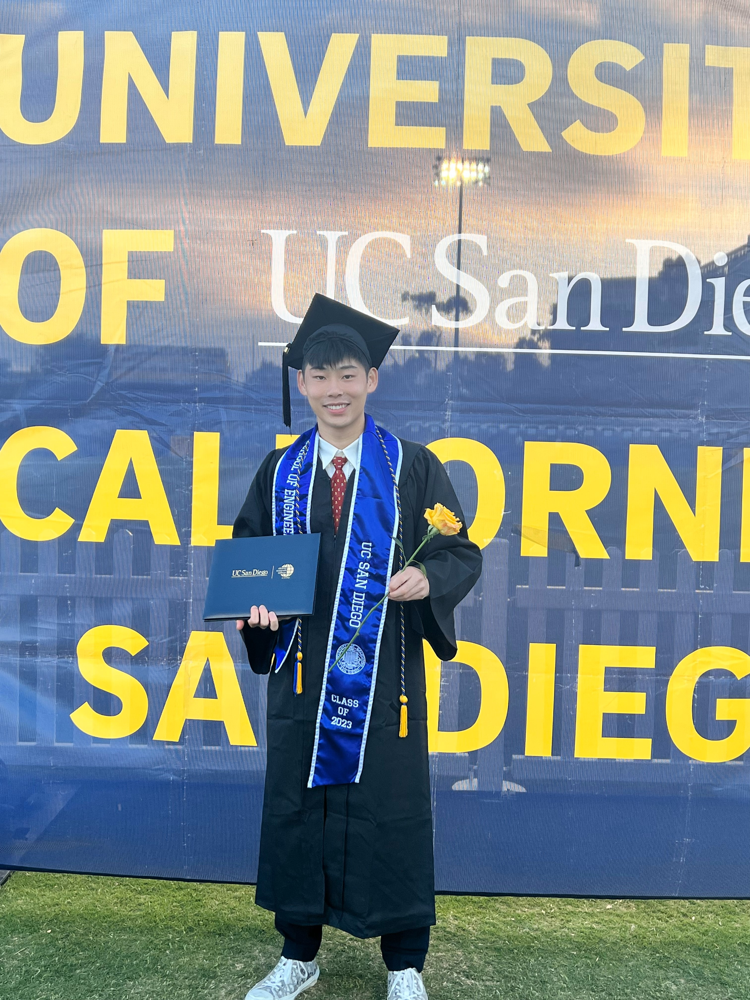
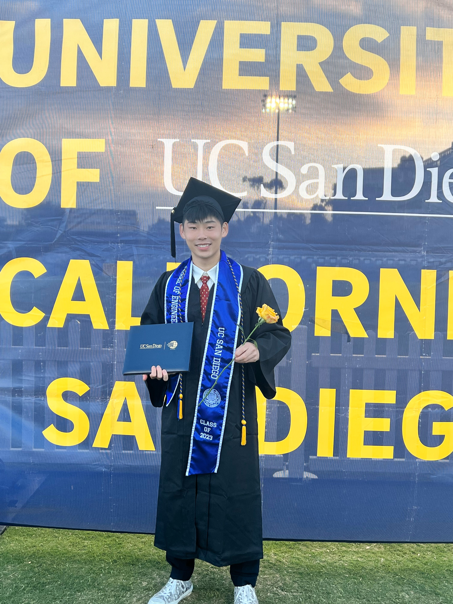
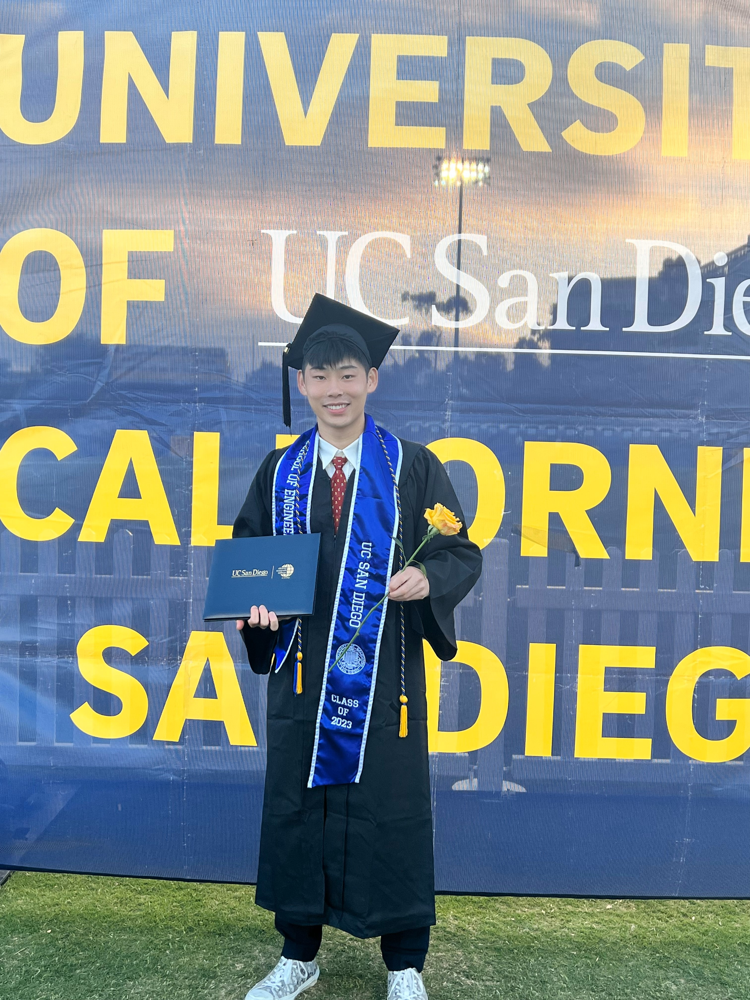
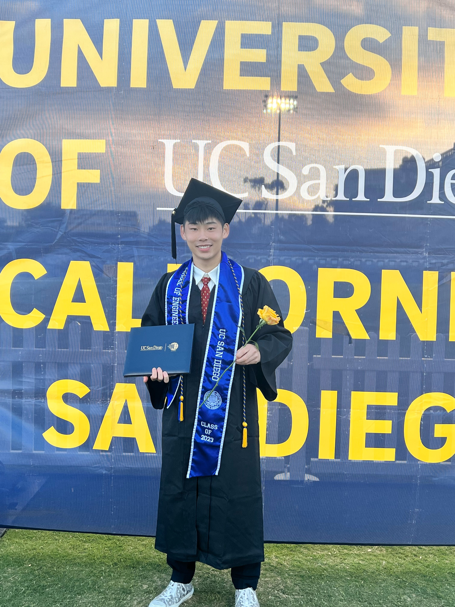

Open Source Developer @ IBM Quantum Computing
Phone Number:
669-243-5472
Email:
gliu2019@gmail.com
Location: Bay Area, Caifornia
Experience:
- Software Development @ IBM
- Decision Engineering Intern @ Intel
- Machine Learning Intern @ Kneron
I have solid fundamentals in hardware engineering concepts from my time at Undergrad, but I now focus on software development and data analysis while being able to view these topics through both a developer and customer standpoint. From developing predictive models to uncovering patterns in complex datasets, I'm fascinated by the power of data to drive meaningful change. As I continue to explore the intersections of technology, data, and business, I'm excited to collaborate with forward-thinking teams to create impactful solutions that address real-world challenges. I believe that by combining my technical skills with my understanding of economics I can contribute to projects that drive both technological innovation and economic value.
I graduated with a degree in Electrical Engineering (with a focus on machine learning and controls) from the University of California, San Diego. Many of my core classes started off with hardware concepts, such as analog/digital circuits as well as system stability control, but eventually I found the topics of machine learning, data analysis, and recommendation systems which were more interesting to me. In addition to these topics, I also studied Economics, taking courses to understand global markets as well as econometrics. Finally, I recently completed IBM's global sales school, where I learned how to interact with potential clients through negotiation, objection handling, and managing different resources as products are developed through multiple teams.